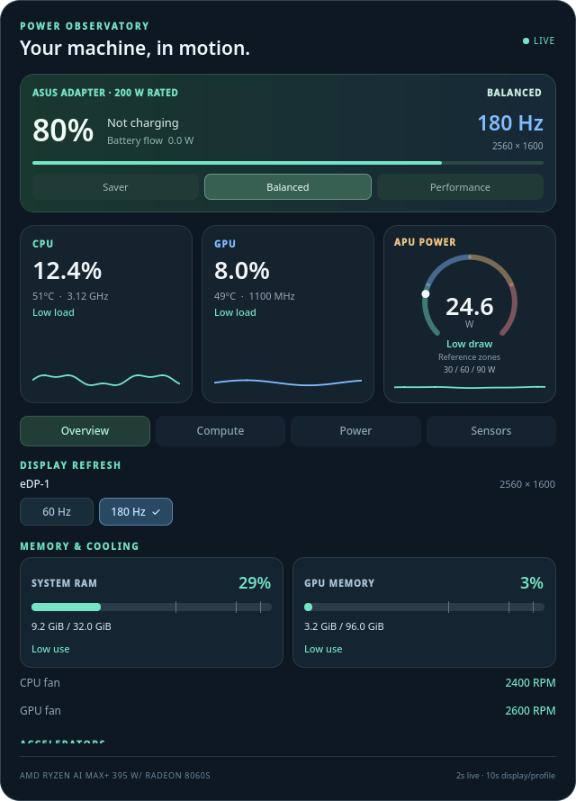

A live power and compute dashboard for KDE Plasma 6 — with the profile and refresh-rate controls sitting right next to the readouts.

KDE Plasma 6 gives you a battery percentage and a power-profile menu. That is the entire story it tells. On most laptops that is tolerable; on an AMD Strix Halo machine it is close to useless. A Ryzen AI MAX+ 395 with a Radeon 8060S puts a CPU, a serious integrated GPU, and an NPU on one chip, sharing one power budget and one pool of memory. When the fan spins up, which of the three caused it? When the battery drains in two hours, where did the watts go? And is the panel still idling at 60 Hz when it can run at 180? Plasma has no first-class answer for any of this — especially for the NPU, which Linux had barely heard of when Plasma 6 shipped.
A native Plasma widget, not an external dashboard. QML draws a dark panel on the desktop; a Python collector reads hardware sensors every two seconds, with capability discovery on a slower ten-second cycle so the polling cost stays low enough to leave running indefinitely. No telemetry upload, no resident daemon — the widget is the whole system.
The readouts go deep: per-thread CPU utilization with frequency, core power, temperature, EPP and governor; GPU utilization with compute- and media-engine activity, power, clocks, and reserved UMA/GTT memory; and NPU activity decoded from AMD firmware by IPU column, with its own power, frequency, and memory traffic. Alongside the gauges, the widget carries controls: Saver / Balanced / Performance buttons wired to power-profiles-daemon, and per-display refresh-rate buttons through kscreen-doctor — each output gets its own buttons at its current resolution, with the applied mode verified before the check mark appears.
temp*_max / temp*_crit; with no driver-reported limit the widget says “Limit unavailable” rather than inventing a safe range. Battery time is a smoothed estimate that refuses to guess at zero flow. Total AC wall draw is declared unavailable instead of being approximated from parts that don't sum.gpu_metrics v3.0 ABI; other revisions fall back to generic readable sensors, and Intel/NVIDIA GPU backends are simply not implemented. Narrow and correct beats broad and wrong.The collector reads Linux hwmon/sysfs for temperatures, power, and battery; powerprofilesctl for profile state; and kscreen-doctor JSON for display discovery. The interesting piece is the AMD gpu_metrics decoder, which unpacks the firmware blob into per-engine activity, NPU state, and memory traffic — the only practical window into what the NPU is doing. Charger nameplate wattage usually can't be detected, so the widget lets owners supply their own ratings in a small JSON config instead of assuming. The engineering discipline shows in CI: Python tests across 3.10–3.14, offscreen QML interaction checks, and package builds — all driven by synthetic fixtures so no contributor needs a Strix Halo to verify a change. An AGENTS.md contract puts AI-assisted contributions through the same gates as human ones.